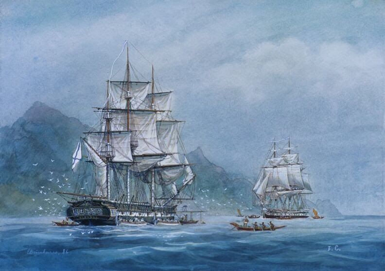

Шлюпы «Надежда» и «Нева»
Шлюпы «Надежда» и «Нева» возглавили список самых знаменитых русских парусников после того, как на них совершили первое кругосветное путешествие в истории России (1803–1806). Командовал этой знаменитой экспедицией Иван Крузенштерн. Хотя изначально ему в соратники назначили графа Николая Резанова — того самого, про которого впоследствие сложили рок-оперу «Юнона и Авось». Однако во время кругосветного плавания капитаны рассорились и фактическое руководство взял на себя Крузенштерн.
Первая русская кругосветная экспедиция прошла без ощутимых потерь. В нее снарядили два шлюпа, купленных в Британии. Длина каждого составила порядка 34 метров, а ширина — около 9 метров. Оба корабля были оснащены пушками. Правда, дальнейшая судьба шлюпов была трагична. В 1808 году во льдах у побережья Дании погибла «Надежда». В 1813 году у берегов Аляски разбилась «Нева».